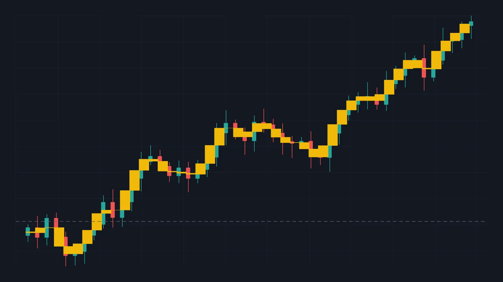
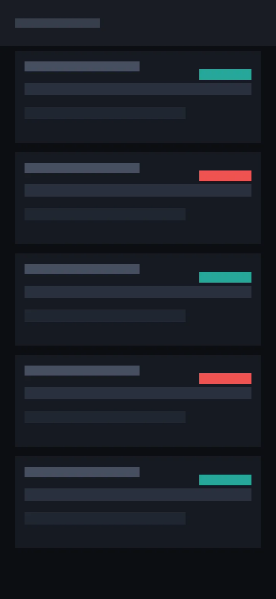

示例：带 K 线图的复盘
复盘记录2026-09-27#示例#BTC#图表
这篇示例演示图片怎么用——把截图拖进来就行，构建时会自动压缩。

上面这张是宽图（1920×1080）。构建后长边会压到 1600px 以内、转成 WebP， 体积通常能减掉八成以上；显示时自动限制高度，不会把版面撑破。

第二张是手机截图那种长图。方括号里的文字如果看起来像文件名（比如上面这个）， 就不会显示图注；写成正常说明才会显示。
复盘
- 图放大了看结构，就不会被 5 分钟 K 线的噪音牵走
- 点击图片可以放大看细节，按 Esc 或再点一下关掉